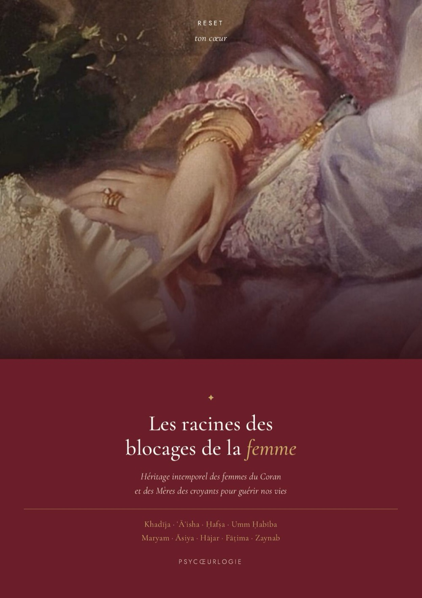
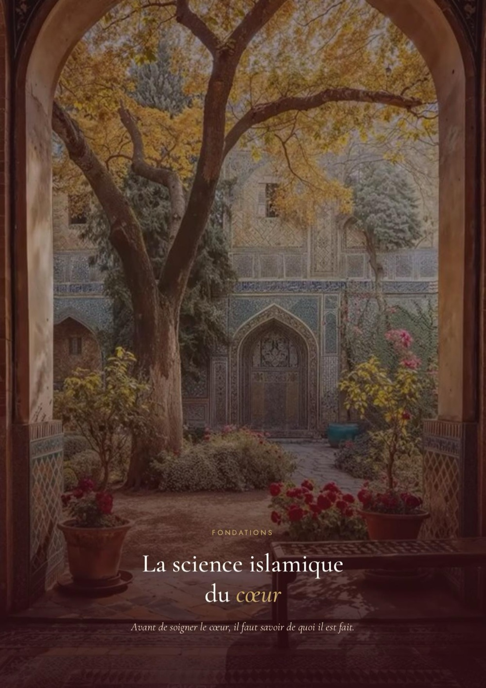
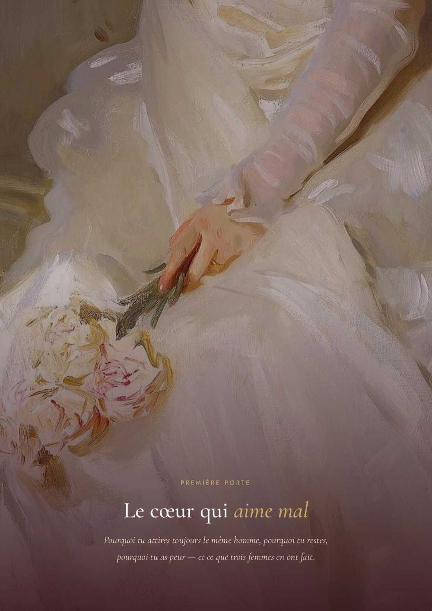
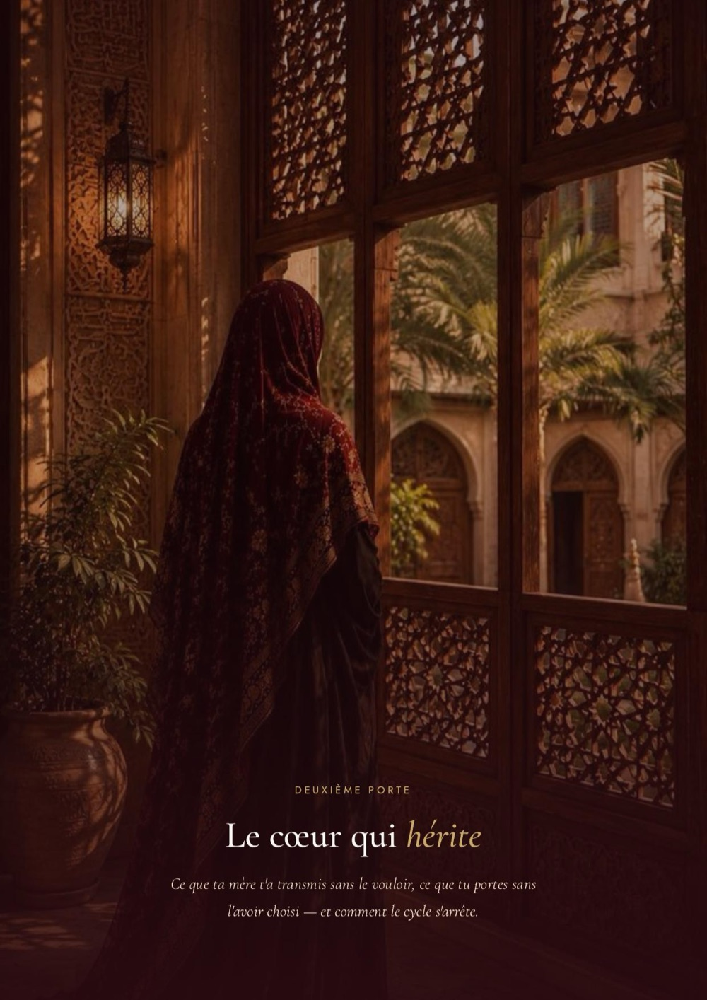
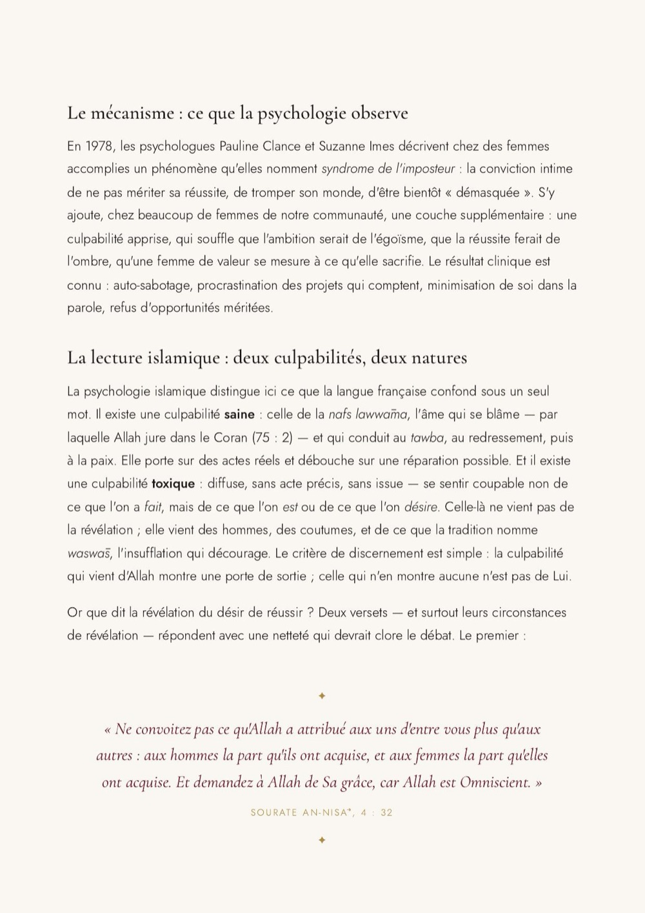
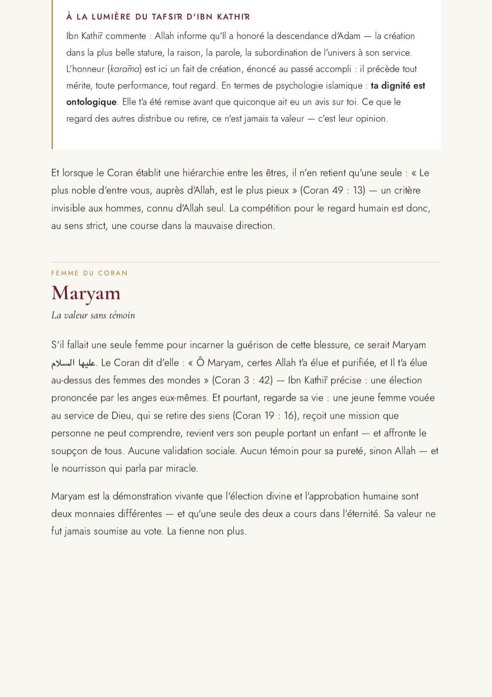
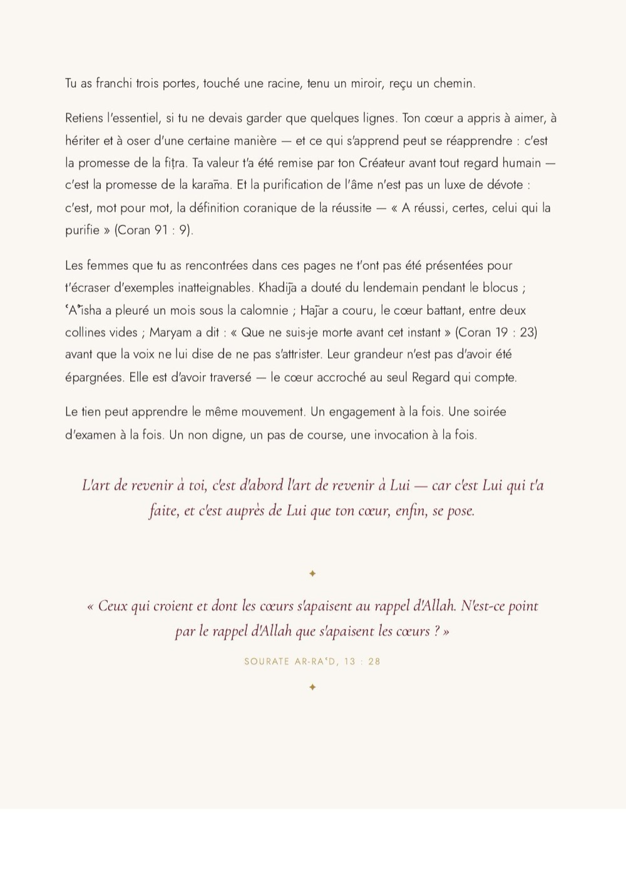

Comprendre, à la lumière du Coran, de la Sunnah et de la psychologie, pourquoi tu aimes mal, pourquoi tu portes ce que tu n'as pas choisi, pourquoi tu n'oses pas. Et comment revenir à toi.
Héritage intemporel des femmes du Coran et des Mères des croyants pour guérir nos vies. Quarante-six pages, une mise en page éditoriale.

Les racines
Le socle'">
Première porte'">
Deuxième porte'">
Troisième porte'">
La racine'">
Lettre'">← Fais glisser →
Ce livre n'est pas un guide de développement personnel de plus. C'est une descente au niveau du cœur, là où se logent les vrais blocages.
Tu refais les mêmes erreurs en amour, toujours le même type d'histoire, toujours la même douleur.
Tu portes le poids de ta mère, de ta lignée, sans savoir où finit leur histoire et où commence la tienne.
Tu n'arrives pas à te donner le droit de réussir, comme si une culpabilité invisible te ramenait toujours en arrière.
Tu sens qu'il y a une blessure sous tout ça, sans arriver à la nommer ni à descendre assez profond pour la soigner.
Tu veux un chemin ancré dans ta tradition, pas une spiritualité de surface saupoudrée de quelques versets.
A réussi, certes, celui qui la purifie.Coran · sourate Ash-Shams, 91 : 9 · la promesse du livre
Chaque blocage est éclairé deux fois : d'abord le mécanisme que la psychologie observe, puis la lecture de la révélation. Et chacun t'attend à travers une femme réelle du Coran.
Les quatre dimensions de l'être et les trois états de la nafs, pour poser le langage du chemin. Une science du cœur vieille de plus de mille ans.
Pourquoi tu attires toujours le même homme, pourquoi tu restes, pourquoi tu as peur. En compagnie de Khadija, Zaynab et Umm Habiba.
Ce que ta mère t'a transmis sans le vouloir, et la fitra, cette nature saine qui prouve que tu n'es pas condamnée à répéter.
La culpabilité d'être ambitieuse, le sentiment d'imposture, et les femmes qui ont porté le savoir, la richesse et le Livre.
Trois portes, une seule croyance, et la réponse que la révélation lui oppose : ta valeur t'a été donnée avant tout regard humain.
Un auto-diagnostic pour révéler ta porte d'entrée, puis un protocole de purification en quatre mouvements pour passer du diagnostic à la transformation.
Quarante-six pages en PDF, neuf chapitres, de la science du cœur au protocole de purification. Une mise en page éditoriale soignée.
Les exercices « Travail du cœur » à chaque porte, et le miroir : trois séries de questions scorables pour révéler ta porte d'entrée.
Une annexe qui cite chaque verset, chaque hadith et chaque savant, plus un glossaire. Rien n'est affirmé sans référence.
Satisfaite ou remboursée, sans question, sans justification. Ce livre a été écrit pour toi, pas pour être remboursé.
Khadija enseigne que l'amour véritable commence avant la rencontre : dans la clarté de ce que ton cœur refuse de négocier.Première porte · Le cœur qui aime mal
Tu n'es pas définie par l'endroit où l'on t'a laissée, mais par ce que tu y construis.Deuxième porte · à l'école de Hajar
Ta dignité t'a été remise par ton Créateur avant que quiconque ait eu un avis sur toi.La racine · la blessure de la valeur
Descends à la racine, en compagnie des femmes du Coran et de la science de ta tradition. À ton rythme, depuis chez toi.
Pas encore prête ? Commence par le mini-guide gratuit →